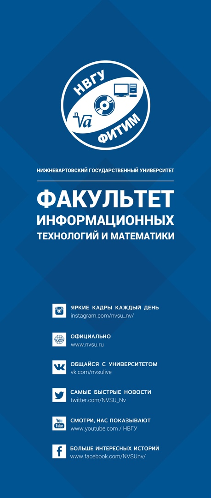

Декан: Худжина Марина Владимировна, кандидат педагогических наук, доцент, почетный работник высшего профессионального образования РФ
Адрес: г. Нижневартовск, ул. Дзержинского д. 11, каб. 407
Тел: 8 (3466) 43-54-42
E-mail: fitm@nvsu.ru
 Физико-математический факультет основан в 1988 году. Деканат и единственная кафедра факультета (кафедра математики и информатики) помещались в 1 кабинете. А студентам приходилось работать в единственном компьютерном классе. Сегодня компьютерный парк факультета составляет более 200 ЭВМ, оснащенных современным программным обеспечением. Имеются серверы, доступ к электронным учебным ресурсам и сети интернет. Для студентов работает студия программирования, лаборатории по различным разделам физики. Факультет имеет значительные научные фундаментальные и прикладные результаты в области математики, физики, информатики и методики их преподавания. Это разработки, защищенные патентами изобретений Российской Федерации и свидетельствами о регистрации интеллектуальной собственности.
Студенты ФИТиМа проходят учебные и производственные практики на базах организаций, обслуживающих нефтяную отрасль (ООО ИК «СИБИНТЕК», АСУ-нефть и др.), разрабатывающих программные комплексы для медицинских учреждений (Комтек), а также в банках и образовательных учреждениях.
Студенты факультета отличаются активной жизненной позицией, высоким уровнем организаторских способностей и творческим потенциалом. Команды факультета регулярно становятся победителями и призерами интеллектуальных игр, конкурсов профессионального мастерства, спортивных состязаний и др.
Студенческий совет факультета Информационных Технологий и Математики – орган студенческого самоуправления, основная цель которого – развитие социальной активности учащихся. Наши основные задачи – развитие студенческого самоуправления, помощь учащимся в реализации их творческого, организационного и научного потенциала, широкое освещение всех сторон студенческой жизни, а также совершенствование образовательного процесса и многое другое. Студенческий совет фаультета это активные студенты, организующие мероприятия различных направленностей.
Председатель: Пушкарева Анна Степановна, студентка 3 курса очного обучения по направлению ИиВТ
Тел: 89195389719
E-mail: kotova.bearar@gmail.com
01/03/2022
На пути к своей истории успеха
Софья Клендершикова, Полина Жигалова, Екатерина Семенова и Кристина Родикова – лучшие студентки факультета информационных технологий и математики НВГУ. Девушки получали стипендии Президента РФ и Правительства РФ, участвовали и продолжают участвовать в научно-практических конференциях и олимпиадах разного уровня, публикуют научные статьи. Истории их успеха опубликованы на сайте «СтипендаитРоссии» наряду с другими обучающимися из вузов России. Студентки имеют опубликованные научные статьи, индексируемые в РИНЦ или входящие в текущий перечень ВАК России, публикации в материалах конференций, индексируемых в РИНЦ.07/02/2022
Выпускники НВГУ – победители городского конкурса «Лучший киберволонтер»
В Нижневартовске определили лучших киберволонтеров в сфере противодействия экстремизму, терроризму, профилактики наркомании и иных антиобщественных и асоциальных явлений. В числе победителей конкурса два выпускника факультета информационных технологий и математики.
1 место занял Даниил Шарафеев, выпускник 2018 года по направлению «Информационные системы и технологии», а ныне специалист Молодежного центра.
2 место у Антона Малютина, учителя информатики, заместителя директора по информатизации средней школы № 5, выпускника 2015 года по специальности «Программное обеспечение вычислительной техники и автоматизированных систем».
Участники конкурса прошли несколько испытаний: выполнили задания «учебного кейса» на определение умения выявлять и анализировать полученную в ходе мониторинга сети Интернет информацию, а также ответили на вопросы тестирования по основным областям знаний и продемонстрировали свои практические достижения.10/01/2022
«Вспомнить все»
36 студентов НВГУ проверили свои знания о праздновании Нового года. На факультете информационных технологий и математики прошла викторина «Вспомнить всё!». Организаторы подготовили видеолегенду и различные рубрики. Участники отвечали на логические вопросы, решали ребусы, выясняли, где «правда или ложь». Время на ответы было ограничено. Победителей определили по баллам и времени, затраченному на ответы:
1 место – Илья Мелюхин (2 курс, факультет экологии и инжиниринга);
2 место – Савелий Белов (1 курс, факультет физической культуры и спорта);
3 место – Вугар Расулов (2 курс, факультет информационных технологий и математики).
Призеров наградили новогодними подарками и дипломами, а участники получили сертификаты в электронном виде.
Больше новостей на сайте и в группе ВКонтакте!